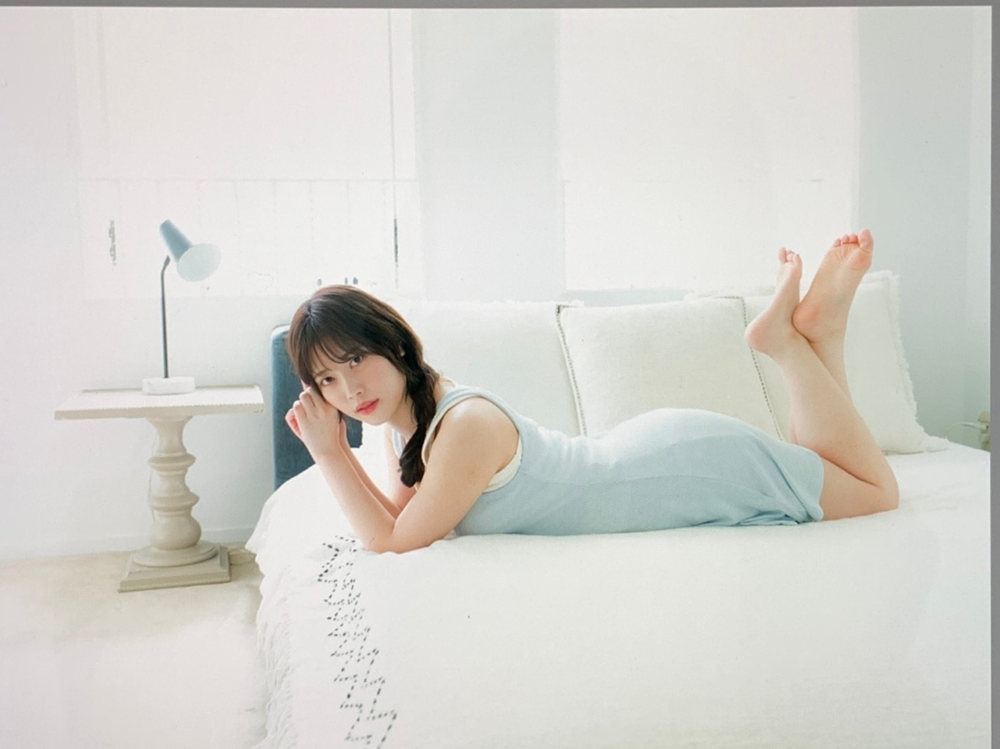
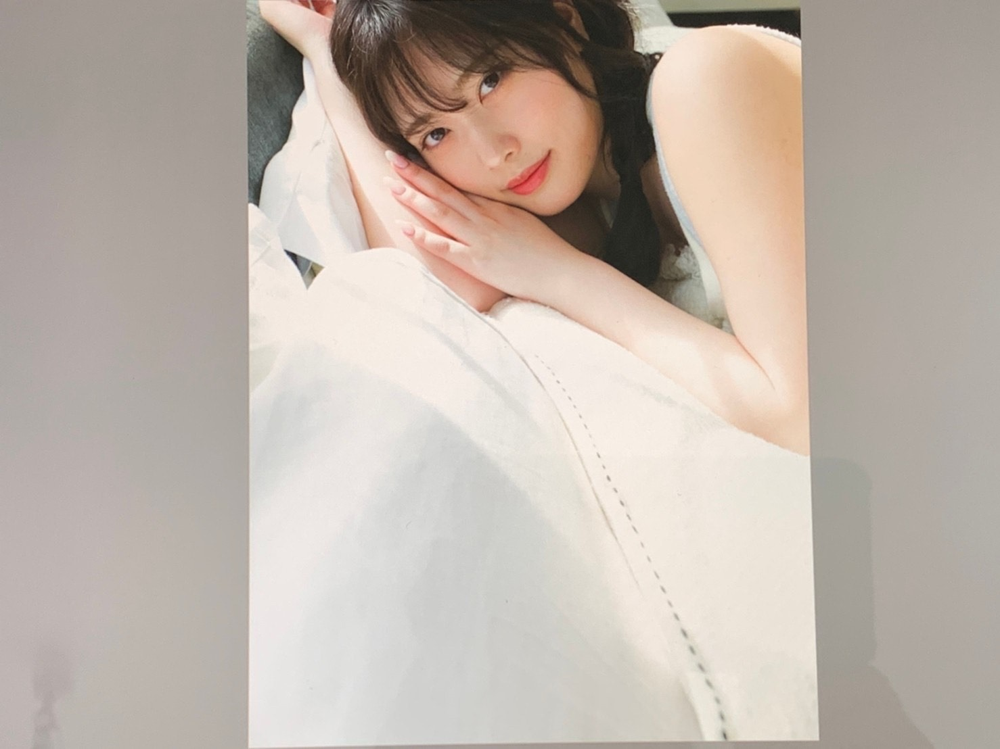
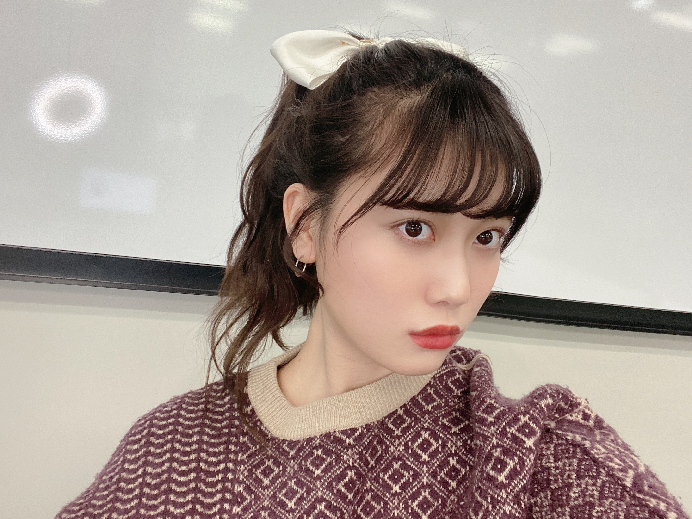
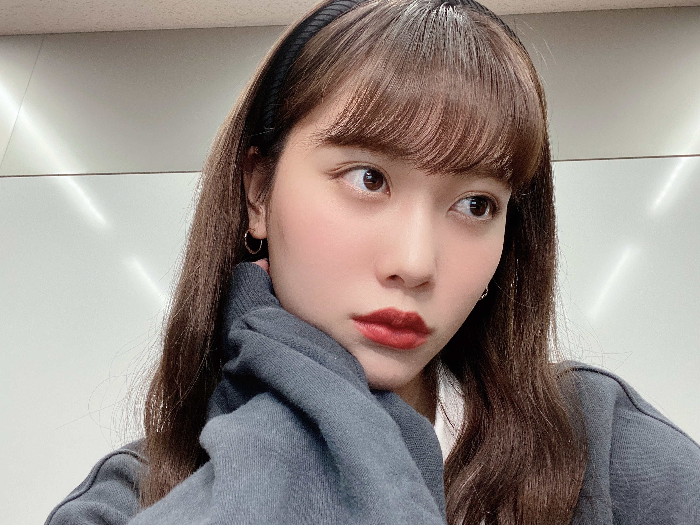
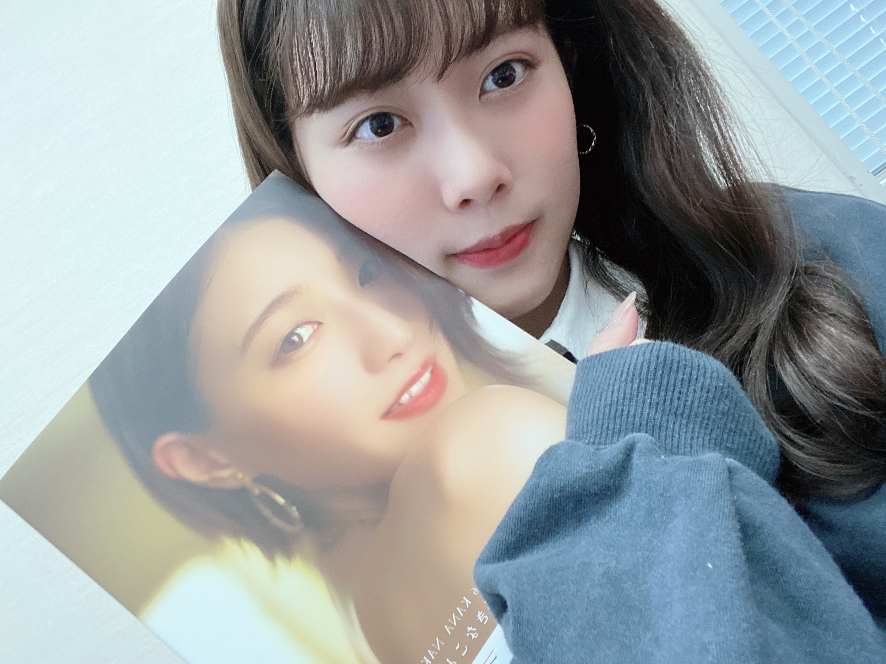

2020/1025Sunだいすきだよーー
こんばんは！
伊藤純奈です

アップトゥボーイ
発売中です☺︎
とってもとっても楽しい
撮影でした〜！！アップトゥボーイの
撮影はなんと4年ぶりでした！！びっくりだ！
カメラマンさんが2期生の初グラビアを
撮ってくださった方だったのでリラックス
して撮影できました☺︎Takeoさんありがとう
ございました！！
みんなたくさんゲットしてね〜

なんか同じ方向向いてる写真
ばっかりだった。(笑)
ここ最近は毎週ミーグリが
あってたのしいです☺︎
また日程が追加されたので
みんな来るべきだと思う☺︎(笑)


お待ちしております

かなちゃんの写真集を
もらいました〜〜
なんとサインとメッセージも
貰ってしまいましたうれしい。
家宝にします。
ほんとに素敵な写真集でみてて
思わずかわいい〜って声に出してしまう
そんな写真集です。みなさまぜひ！
そして本日がかなちゃんの
乃木坂46としての最後の日でした。
なんか実感が湧かなすぎてまた
次の日とかに楽屋にいない...って
悲しくなるんだろうなあ。
ふと、
この前のバスラでかなちゃん真夏ちゃんで
歌ってた「人生を考えたくなる」を
急に思い出してあ〜〜泣けたなあ〜
と懐かしい気持ちになりました。
誰からも好かれてて信頼されている
かなちゃん。卒業は寂しいけど
これからも頑張ってください☺︎
本当に本当に
お疲れ様でした！！
これからもだいすきだよ。
卒業してもぜったい会おうね〜！
そして
28日は白石さんの
卒業ライブです。
その前に27日の20時〜
abemaで特番があります！
白石タクシー
乗車してるのでぜひ☺︎
大好きな先輩の卒業を
見送るのは何回経験しても
悲しいものです。
みーんなだいすきだよーーーー
2020/10/25 19:40
コメント(192)
そんな純奈も大好き
純ちゃんブログ更新ありがとう！
まいちゃんの卒コンもうすぐだね！
体調には気をつけてね！ライブ楽しみにしてます！大好き！
まいちゃんの卒コンもうすぐだね！
体調には気をつけてね！ライブ楽しみにしてます！大好き！
純奈ちゃん大好きだよ〜！！
今週は忘れられない1週間になるね〜
ブログ更新お疲れ様です！
今日も今日とてかわいいぞー！！！
今日も今日とてかわいいぞー！！！
だいすきだよーーーー
写真集待ってます〜(^^)♡
写真集待ってます〜(^^)♡
更新ありがとうございます。
いつか純奈さんの写真集も見てみたいです。
体調にはお気を付けくださいねー
いつか純奈さんの写真集も見てみたいです。
体調にはお気を付けくださいねー
アップトゥーボーイ買ってきました！
また感想はオンラインイベントで伝えますね！
また感想はオンラインイベントで伝えますね！
じゅんな
やっぱり先輩の卒業って寂しいよね…メンバーの卒業を何度も経験してると思うけど、慣れないもんね…
やっぱり先輩の卒業って寂しいよね…メンバーの卒業を何度も経験してると思うけど、慣れないもんね…
純奈ちゃん！
すき！
大好き！
アップトゥボーイ買うね~
はやく会えますように！
すき！
大好き！
アップトゥボーイ買うね~
はやく会えますように！
アップトゥボーイ買いました！
純ちゃんのソログラビア嬉しすぎるし本当に本当に美しすぎる！！！！！！
美の女神様なの？
純ちゃんが一番綺麗です。
純ちゃんのソログラビア嬉しすぎるし本当に本当に美しすぎる！！！！！！
美の女神様なの？
純ちゃんが一番綺麗です。
アップトゥボーイ見たよ！
青いジャケットかっこいい！お◯そ〜！って言いたくなるページも可愛かった^ ^
配信だけど久しぶりのライブってところは楽しみ！
お別れはしたくないけどね。
青いジャケットかっこいい！お◯そ〜！って言いたくなるページも可愛かった^ ^
配信だけど久しぶりのライブってところは楽しみ！
お別れはしたくないけどね。
じゅんな。ブログ更新ありがとうございます。水曜日のライブ頑張って下さい。
こんばんは！
白石タクシー楽しみです！卒業は悲しいけど、見届けます…！
白石タクシー楽しみです！卒業は悲しいけど、見届けます…！
じゅんなちゃん！ブログ更新ありがとう☺︎
アップトゥボーイめっちゃ可愛かった☺︎
まいやんとかなりんの卒業悲しいよね。
卒コンもabemaもみるよ！じゅんなちゃん見れるの楽しみ！
じゅんなちゃんだいすき！！！☺︎
アップトゥボーイめっちゃ可愛かった☺︎
まいやんとかなりんの卒業悲しいよね。
卒コンもabemaもみるよ！じゅんなちゃん見れるの楽しみ！
じゅんなちゃんだいすき！！！☺︎
純奈さん、ブログ更新ありがとうございます！！！
先輩方の卒業は悲しいけど、最後の最後まで一緒に楽しんで、笑い合って、笑顔で見送りましょう！！！！
先輩方の卒業は悲しいけど、最後の最後まで一緒に楽しんで、笑い合って、笑顔で見送りましょう！！！！
純奈ちゃんブログ更新ありがとう！
アップトゥボーイの純奈ちゃん本当に綺麗！
表情が素敵すぎてずっと見てられるわぁ♪
ミーグリもありがとう！全部振り替えたのでまたお邪魔させていただきますね〜
純奈ちゃんに毎週会えるのがしあわせです。
いつもありがとう！
そして水曜日の白石麻衣さんの卒業ライブ！さみしいけれど純奈ちゃんががんばる姿を応援するので！
またね！
アップトゥボーイの純奈ちゃん本当に綺麗！
表情が素敵すぎてずっと見てられるわぁ♪
ミーグリもありがとう！全部振り替えたのでまたお邪魔させていただきますね〜
純奈ちゃんに毎週会えるのがしあわせです。
いつもありがとう！
そして水曜日の白石麻衣さんの卒業ライブ！さみしいけれど純奈ちゃんががんばる姿を応援するので！
またね！
ナカダカナシカー！！
純奈ちゃんブログ更新ありがとう。
純奈！
ブログ更新、ありがとう！
今日もミーグリ、ありがとうございました！
自分も、純奈とお話することが出来て嬉しいです。
毎回、最初は緊張でドキドキですが、終わると楽しいなーと感じています。
今日のポニーテールが本当に可愛くて！
1人で盛り上がっていました。
長い間話す機会がなくて、話したいことがいっぱいです。
来週からもよろしくお願いします！
卒コン、楽しみにしています。
遠くから思いを届けます！
ブログ更新、ありがとう！
今日もミーグリ、ありがとうございました！
自分も、純奈とお話することが出来て嬉しいです。
毎回、最初は緊張でドキドキですが、終わると楽しいなーと感じています。
今日のポニーテールが本当に可愛くて！
1人で盛り上がっていました。
長い間話す機会がなくて、話したいことがいっぱいです。
来週からもよろしくお願いします！
卒コン、楽しみにしています。
遠くから思いを届けます！
俺もー
メイクと洋服と髪型とても似合っていて素敵ですね☆活躍を応援します。
純奈ちゃんブログ更新ありがとね~
UTB4年ぶりなんだよね！びっくりした笑
これは買わねばだよね~
お家感ある感じで良さげな雰囲気だ~
ミーグリ行きたいんだけどねぇ…
握手券あるけどまだ振替出来なさそうでお話出来なくて残念…
振替出来るようになったらすぐ行く！
その時の純奈ちゃんはもう髪長くなってそうかも笑
かなりんの写真集メッセージ付きで貰えたんだね！
よかったね~メッセージにはいい事沢山書いてくれてたかな？笑
どんどん色んな子が卒業していって悲しいね…
でもその分その子たちが新たな1歩を踏み出すって思うと応援したくなる！
今日のミーグリ終わりでかなりんとお話出来たかな？
麻衣ちゃんも卒業間近だからもっともっとお話出来たらいいね~
素敵な卒業ライブになるといいなぁ~
リハーサルもライブも頑張っていいものにしてね！
応援してるよ~
それじゃあまたね~ばいばーい
UTB4年ぶりなんだよね！びっくりした笑
これは買わねばだよね~
お家感ある感じで良さげな雰囲気だ~
ミーグリ行きたいんだけどねぇ…
握手券あるけどまだ振替出来なさそうでお話出来なくて残念…
振替出来るようになったらすぐ行く！
その時の純奈ちゃんはもう髪長くなってそうかも笑
かなりんの写真集メッセージ付きで貰えたんだね！
よかったね~メッセージにはいい事沢山書いてくれてたかな？笑
どんどん色んな子が卒業していって悲しいね…
でもその分その子たちが新たな1歩を踏み出すって思うと応援したくなる！
今日のミーグリ終わりでかなりんとお話出来たかな？
麻衣ちゃんも卒業間近だからもっともっとお話出来たらいいね~
素敵な卒業ライブになるといいなぁ~
リハーサルもライブも頑張っていいものにしてね！
応援してるよ~
それじゃあまたね~ばいばーい
かなりんヲタです。
かなちゃんや純奈たちが作ってくれたアンダーライブの素晴らしさは絶滝忘れません
かなちゃんや純奈たちが作ってくれたアンダーライブの素晴らしさは絶滝忘れません
ミーグリ2週楽しかったです！純奈さんが聞いてるフランスのあの曲私も聞くことにします！笑
早く握手会したいな〜
早く握手会したいな〜
今日ミーグリ3部に参加しました！
初めてで緊張したけどじゅんちゃんがすごく可愛くて幸せでした〜
次は直接会えますように
初めてで緊張したけどじゅんちゃんがすごく可愛くて幸せでした〜
次は直接会えますように
ずんなーーかわいすぎる♡
タクシーもライブも楽しみにしてます！ずんなが泣いてるところみて泣きそう
タクシーもライブも楽しみにしてます！ずんなが泣いてるところみて泣きそう
純奈ー＼(^^)／
更新ありがとー
かなちゃん、まいやんの卒業さみしいけど
大好きな先輩との時間、大切にして下さい！
更新ありがとー
かなちゃん、まいやんの卒業さみしいけど
大好きな先輩との時間、大切にして下さい！
純奈ー！
ブログ更新ありがとー！
そうだね、今日がかなりん乃木坂46最後の日だったね…
昨日生ドルで泣いて、今日のぎののでおいでシャンプーがかかってナカダカナシカまではやれなかったけど、やっぱり悲しいし、寂しかった！
でも、かなりんは笑顔で見送ってもらった方が嬉しい気がして笑顔で見送ろうと思います！
ね！白石タクシー純奈も乗ってるんだね！
予告で見て、めっちゃ嬉しかった！
しっかり観ます！
残りの時間、大切にしようと思います！
まいやんの卒コンでもしっかり見届けますよー！
純奈もファイトです！
応援してます！
ブログ更新ありがとー！
そうだね、今日がかなりん乃木坂46最後の日だったね…
昨日生ドルで泣いて、今日のぎののでおいでシャンプーがかかってナカダカナシカまではやれなかったけど、やっぱり悲しいし、寂しかった！
でも、かなりんは笑顔で見送ってもらった方が嬉しい気がして笑顔で見送ろうと思います！
ね！白石タクシー純奈も乗ってるんだね！
予告で見て、めっちゃ嬉しかった！
しっかり観ます！
残りの時間、大切にしようと思います！
まいやんの卒コンでもしっかり見届けますよー！
純奈もファイトです！
応援してます！
お疲れ様なのです└(ﾟ∀ﾟ└) (┘ﾟ∀ﾟ)┘
卒業は寂しいけど、新しい未来へ(σ≧▽≦)σ
卒業は寂しいけど、新しい未来へ(σ≧▽≦)σ
こんばんは。女性らしいラインを持って
るじゅんなちゃん。沢山グラビアやって
欲しいなぁ。
それにコミュ力も高いから、ミーグリも
楽しそうですね。
写真を見ると、髪型や服によってドラマ
チックに雰囲気が変わってますね。
今日から乃木坂にとってエモい週間が始
まります。
気持ちを強く持ち乗り越えましょう。
るじゅんなちゃん。沢山グラビアやって
欲しいなぁ。
それにコミュ力も高いから、ミーグリも
楽しそうですね。
写真を見ると、髪型や服によってドラマ
チックに雰囲気が変わってますね。
今日から乃木坂にとってエモい週間が始
まります。
気持ちを強く持ち乗り越えましょう。
純奈ちゃんブログ更新ありがとうございます！！
アップトゥーボーイめちゃくちゃ可愛かったです！
純奈ちゃん久保ちゃんペア好き☺︎☺︎☺︎
純奈ちゃんのパフォーマンス観たいから
8thバスラの円盤化早くされて欲しいな〜と思ってます(*´ω`*)
ミーグリ楽しそうでいいな〜(｡-_-｡)♡
早く会いたいです。。。
今日も世界一好きだよ。
アップトゥーボーイめちゃくちゃ可愛かったです！
純奈ちゃん久保ちゃんペア好き☺︎☺︎☺︎
純奈ちゃんのパフォーマンス観たいから
8thバスラの円盤化早くされて欲しいな〜と思ってます(*´ω`*)
ミーグリ楽しそうでいいな〜(｡-_-｡)♡
早く会いたいです。。。
今日も世界一好きだよ。
純奈、ブログ更新ありがとう。どこにでもいるおっさんです。
今日はミーグリでお話できて嬉しかったよ。ありがとー。
これまでの初期から毎年の浴衣のコンプ、純奈本人に自慢できてよかったよ。
自分の宝物なんだよ。
話はかわるけど、花奈りんの卒業はやっぱり寂しいよね。
卒業しても、ずっと甘えるといいよ。
花奈りんはやさしい先輩だからね。
また、2週間後にミーグリいくね。
ひでき
今日はミーグリでお話できて嬉しかったよ。ありがとー。
これまでの初期から毎年の浴衣のコンプ、純奈本人に自慢できてよかったよ。
自分の宝物なんだよ。
話はかわるけど、花奈りんの卒業はやっぱり寂しいよね。
卒業しても、ずっと甘えるといいよ。
花奈りんはやさしい先輩だからね。
また、2週間後にミーグリいくね。
ひでき
可愛すぎます
更新ありがとう！！
アップトゥボーイの写真好きだなぁ〜
ミーグリ楽しそうだね！！
参加出来ないのほんとに悲しい…ぴえんです、
かなりんもまいやんも卒業悲しい。
かなりん…卒コンしないで卒業なんてね。
バスラが最後だったなんて信じたくないです。
あの時はこんなことになるなんて思いもしなかったから。
最後の時間まで笑顔を詰め込んでください！！！
水曜日楽しみにしてる！！！
アップトゥボーイの写真好きだなぁ〜
ミーグリ楽しそうだね！！
参加出来ないのほんとに悲しい…ぴえんです、
かなりんもまいやんも卒業悲しい。
かなりん…卒コンしないで卒業なんてね。
バスラが最後だったなんて信じたくないです。
あの時はこんなことになるなんて思いもしなかったから。
最後の時間まで笑顔を詰め込んでください！！！
水曜日楽しみにしてる！！！
純奈さん*ブログ更新ありがとうございます。
昨年、中田花奈ちゃんとペアの全握に行きました。
純奈さんの歌の表現力、ギャップが凄く好きで
緊張しながら握手したのを覚えています。
周りのみんなが卒業していくのは寂しいですね。
純奈さんの未来も乃木坂の未来もときめきに溢れたものでありますように。
昨年、中田花奈ちゃんとペアの全握に行きました。
純奈さんの歌の表現力、ギャップが凄く好きで
緊張しながら握手したのを覚えています。
周りのみんなが卒業していくのは寂しいですね。
純奈さんの未来も乃木坂の未来もときめきに溢れたものでありますように。
純ちゃんブログ更新ありがとう
やっぱりメンバーの卒業は悲しい。。。
かなりんも卒業されるけど、絶対に新たな道で活躍してほしいなって思う。。
アップトゥボーイすごく良かった☺︎
純ちゃんも新たな道頑張ってほしい！ずっと応援します！！
やっぱりメンバーの卒業は悲しい。。。
かなりんも卒業されるけど、絶対に新たな道で活躍してほしいなって思う。。
アップトゥボーイすごく良かった☺︎
純ちゃんも新たな道頑張ってほしい！ずっと応援します！！
じゅんなちゃん
ブログ更新ありがとうねぇ
今日は一日中お初のミーグリ
参加してました
じゅんなちゃんお話ししてくれて
ありがとうございました お疲れ！
緊張しすぎて ポニーテール気づくの
遅かった 笑笑 可愛かった〜
写真ありがとう〜
ずっと伝えたかった阿呆浪士の話や
アップトゥボーイの感想も伝えられたし
ミーグリ楽しいなぁ
まいやんの卒コン寂しいけど
久しぶりのライブ 楽しんでね
ブログ更新ありがとうねぇ
今日は一日中お初のミーグリ
参加してました
じゅんなちゃんお話ししてくれて
ありがとうございました お疲れ！
緊張しすぎて ポニーテール気づくの
遅かった 笑笑 可愛かった〜
写真ありがとう〜
ずっと伝えたかった阿呆浪士の話や
アップトゥボーイの感想も伝えられたし
ミーグリ楽しいなぁ
まいやんの卒コン寂しいけど
久しぶりのライブ 楽しんでね
ミーグリやりたかったけど全部仕事でした。残念です
純奈ちゃんのブログの写真、今日もどれも可愛すぎます…
白石タクシー、卒業ライブ見るよー
純奈ちゃんのブログの写真、今日もどれも可愛すぎます…
白石タクシー、卒業ライブ見るよー
じゅんなー！！！！
ブログ更新ありがとう〜！！！
アップトゥボーイ買ったよ〜全部のカットが可愛すぎた
ミーグリ参加したいけど今回握手券買えてないから次のシングルでもしあったら絶対参加する！！！！
お別れはいつになっても悲しいよね、、、私ですらすんごい悲しいからメンバーのみんなはもっと悲しいだろうなって思う、、
白石タクシーも卒コンも絶対観るからね〜！！寂しいし悲しいけど楽しみだよ〜！！
まだまだ体調管理に気の抜けない日々が続くけど、どうかお身体には気をつけてご自愛ください！純奈ちゃん大好きだよ〜！！
アップトゥボーイ買ったよ〜全部のカットが可愛すぎた
ミーグリ参加したいけど今回握手券買えてないから次のシングルでもしあったら絶対参加する！！！！
お別れはいつになっても悲しいよね、、、私ですらすんごい悲しいからメンバーのみんなはもっと悲しいだろうなって思う、、
白石タクシーも卒コンも絶対観るからね〜！！寂しいし悲しいけど楽しみだよ〜！！
まだまだ体調管理に気の抜けない日々が続くけど、どうかお身体には気をつけてご自愛ください！純奈ちゃん大好きだよ〜！！
卒業は何回きても寂しいですよね……卒コンの動画とか同じ場面で何回も泣けます。
純奈ちゃんブログ更新とオフショありがとう！
アップトゥーボーイの純奈ちゃん
素敵すぎて最高でした。
大好きな人が卒業しちゃうの悲しいね
アベマの白石タクシー見るの楽しみだ～！
私も純奈ちゃんのこと大好きだよー
アップトゥーボーイの純奈ちゃん
素敵すぎて最高でした。
大好きな人が卒業しちゃうの悲しいね
アベマの白石タクシー見るの楽しみだ～！
私も純奈ちゃんのこと大好きだよー
今回のブログ感動する。
愛を感じますね
愛を感じますね
純奈ちゃん俺も大好きだから雑誌絶対に買うよ
やっぱり卒業するっていうのは悲しい、
最後は生で会ってお別れしたいなーと思います
アップトゥボーイ買いました！とってもよかったです
最後は生で会ってお別れしたいなーと思います
アップトゥボーイ買いました！とってもよかったです
じゅんにゃーー＼(^o^)／お疲れさまでした
うわーー、久しぶりじゅんのグラビアだ
絶対見るよ(｡>﹏<｡)♡
ミーグリもお疲れさまでした
なんかリボンと小さいイヤリング姿珍しいなあ、好き(*´ω｀*)
花奈と今後も連絡とって仲良くしてね＼(^o^)／
結局写真集貰ったよね（笑）
これからも頑張って(/･ω･)/
うわーー、久しぶりじゅんのグラビアだ
絶対見るよ(｡>﹏<｡)♡
ミーグリもお疲れさまでした
なんかリボンと小さいイヤリング姿珍しいなあ、好き(*´ω｀*)
花奈と今後も連絡とって仲良くしてね＼(^o^)／
結局写真集貰ったよね（笑）
これからも頑張って(/･ω･)/
ふぎょぎょ
めっちゃ美しい
癒されたぁ
めっちゃ美しい
癒されたぁ
ブログ更新ありがと！
ボブも好きだけど髪長いじゅんな好きー！
ミーグリ楽しそう〜私もみんなとお話したい…！
卒業ってその本人の将来の為でもあるけど悲しいよね。。。
番組も、ライブも、楽しみにしてます！！
私もダイスキ！！
ボブも好きだけど髪長いじゅんな好きー！
ミーグリ楽しそう〜私もみんなとお話したい…！
卒業ってその本人の将来の為でもあるけど悲しいよね。。。
番組も、ライブも、楽しみにしてます！！
私もダイスキ！！


これからも乃木坂をたくさん応援します